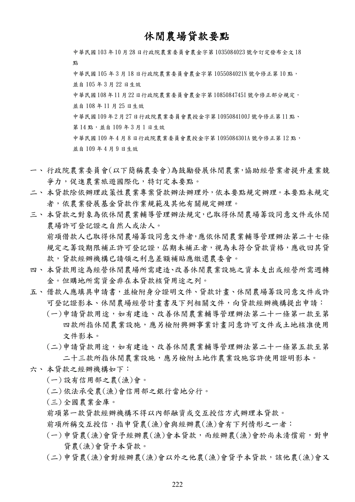
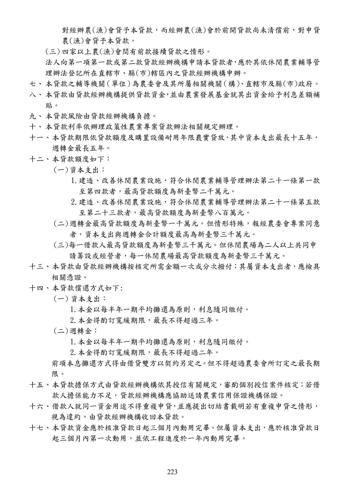
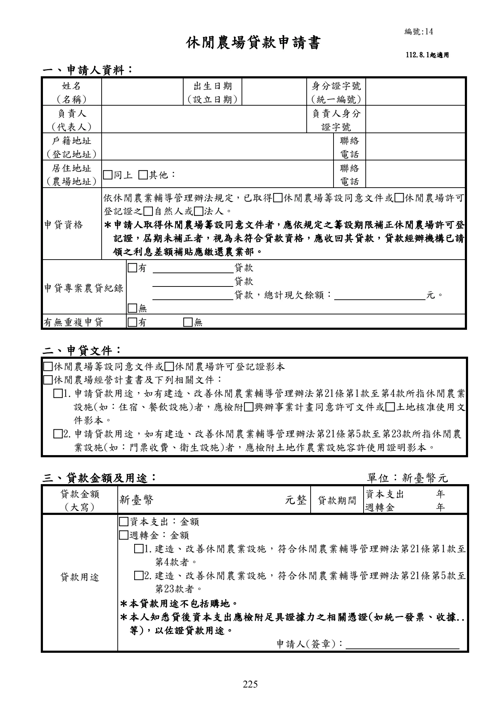
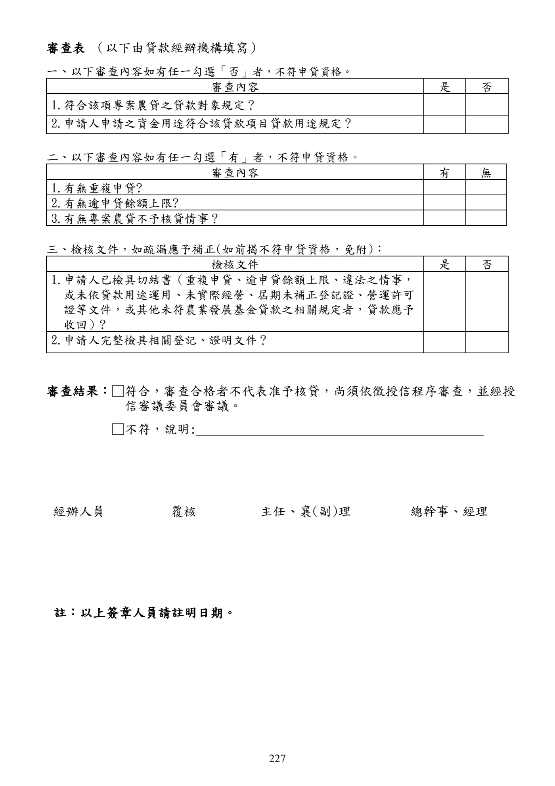

休閒農場貸款
本頁忠實呈現原文，不提供資格摘要、額度摘要、利率摘要或核貸判斷。
手冊頁：222 PDF頁：224／359
{kind=link}

展開查看PDF原始文字層
複雜表格欄列可能因文字層順序失真，請搭配原頁預覽查閱。
休閒農場貸款要點 中華民國103 年10 月28 日行政院農業委員會農金字第1035084023 號令訂定發布全文18 點 中華民國 105 年 3 月 18 日行政院農業委員會農金字第 1055084021N 號令修正第 10 點， 並自 105 年 3 月 22 日生效 中華民國108 年11 月22 日行政院農業委員會農金字第1085084745I 號令修正部分規定， 並自 108 年 11 月 25 日生效 中華民國109 年2 月27 日行政院農業委員會農授金字第1095084100J 號令修正第11 點、 第 14 點，並自 109 年 3 月1 日生效 中華民國 109 年 4 月 8 日行政院農業委員會農授金字第 1095084301A 號令修正第 12 點， 並自 109 年 4 月 9 日生效 一、 行政院農業委員會(以下簡稱農委會)為鼓勵發展休閒農業 ， 協助經營業者提升產業競 爭力，促進農業旅遊國際化，特訂定本要點。 二、 本貸款除依辦理政策性農業專案貸款辦法辦理外 ， 依本要點規定辦理 。 本要點未規定 者，依農業發展基金貸款作業規範及其他有關規定辦理。 三、 本貸款之對象為依休閒農業輔導管理辦法規定 ， 已取得休閒農場籌設同意文件或休閒 農場許可登記證之自然人或法人。 前項借款人已取得休閒農場籌設同意文件者 ，應依休閒農業輔導管理辦法第二十七條 規定之籌設期限補正許可登記證，屆期未補正者，視為未符合貸款資格，應收回其貸 款，貸款經辦機構已請領之利息差額補貼應繳還農委會。 四、 本貸款用途為經營休閒農場所需建造 、 改善休閒農業設施之資本支出或經營所需週轉 金。但購地所需資金非在本貸款核貸用途之列。 五、 借款人應填具申請書，並檢附身分證明文件、貸款計畫、休閒農場籌設同意文件或許 可登記證影本、休閒農場經營計畫書及下列相關文件，向貸款經辦機構提出申請： (一) 申請貸款用途，如有建造、 改善休閒農業輔導管理辦法第二十一條第一款至第 四款所指休閒農業設施，應另檢附興辦事業計畫同意許可文件或土地核准使用 文件影本。 (二) 申請貸款用途，如有建造、 改善休閒農業輔導管理辦法第二十一條第五款至第 二十三款所指休閒農業設施，應另檢附土地作農業設施容許使用證明影本。 六、 本貸款之經辦機構如下： (一) 設有信用部之農(漁)會。 (二) 依法承受農(漁)會信用部之銀行當地分行。 (三) 全國農業金庫。 前項第一款貸款經辦機構不得以內部融資或交互授信方式辦理本貸款。 前項所稱交互授信，指申貸農(漁)會與經辦農(漁)會有下列情形之一者： (一) 申貸農(漁)會貸予經辦農(漁)會本貸款，而經辦農(漁)會於尚未清償前，對申 貸農(漁)會貸予本貸款。 (二) 申貸農(漁)會對經辦農(漁)會以外之他農(漁)會貸予本貸款，該他農(漁)會又
手冊頁：223 PDF頁：225／359
{kind=link}

展開查看PDF原始文字層
複雜表格欄列可能因文字層順序失真，請搭配原頁預覽查閱。
對經辦農(漁)會貸予本貸款，而經辦農(漁)會於前開貸款尚未清償前，對申貸
農(漁)會貸予本貸款。
(三) 四家以上農(漁)會間有前款接續貸款之情形。
法人向第一項第一款或第二款貸款經辦機構申請本貸款者 ， 應於其依休閒農業輔導管
理辦法登記所在直轄市、縣(市)轄區內之貸款經辦機構申辦。
七、 本貸款之輔導機關 （單位） 為農委會及其所屬相關機關 （構） 、 直轄市及縣(市)政府。
八、 本貸款由貸款經辦機構提供貸款資金 ， 並由農業發展基金就其出資金給予利息差額補
貼。
九、 本貸款風險由貸款經辦機構負擔。
十、 本貸款利率依辦理政策性農業專案貸款辦法相關規定辦理。
十一、 本貸款期限依貸款額度及購置設備耐用年限覈實貸放 ， 其中資本支出最長十五年，
週轉金最長五年。
十二、 本貸款額度如下：
(一) 資本支出：
1. 建造、改善休閒農業設施，符合休閒農業輔導管理辦法第二十一條第一款
至第四款者，最高貸款額度為新臺幣二千萬元。
2. 建造、改善休閒農業設施，符合休閒農業輔導管理辦法第二十一條第五款
至第二十三款者，最高貸款額度為新臺幣八百萬元。
(二) 週轉金最高貸款額度為新臺幣一千萬元。 但情形特殊，報經農委會專案同意
者，資本支出與週轉金合計額度最高為新臺幣三千萬元。
(三)每一借款人最高貸款額度為新臺幣三千萬元。但休閒農場為二人以上共同申
請籌設或經營者，每一休閒農場最高貸款額度為新臺幣三千萬元。
十三、 本貸款由貸款經辦機構按核定所需金額一次或分次撥付；其屬資本支出者，應檢具
相關憑證。
十四、 本貸款償還方式如下:
(一) 資本支出：
1.本金以每半年一期平均攤還為原則，利息隨同繳付。
2.本金得酌訂寬緩期限，最長不得超過三年。
(二) 週轉金：
1.本金以每半年一期平均攤還為原則，利息隨同繳付。
2.本金得酌訂寬緩期限，最長不得超過二年。
前項本息攤還方式得由借貸雙方以契約另定之 。 但不得超過農委會所訂定之最長期
限。
十五、 本貸款擔保方式由貸款經辦機構依其授信有關規定，審酌個別授信案件核定；若借
款人擔保能力不足，貸款經辦機構應協助送請農業信用保證機構保證。
十六、 借款人就同一資金用途不得重複申貸 ， 並應提出切結書載明若有重複申貸之情形，
視為違約，由貸款經辦機構收回本貸款。
十七、 本貸款資金應於核准貸款日起三個月內動用完畢。但屬資本支出，應於核准貸款日
起三個月內第一次動用，並依工程進度於一年內動用完畢。手冊頁：224 PDF頁：226／359
借款人確有困難，致工程未能於前項期限內完成者，得向貸款經辦機構申請延長資本支出貸款之動用期限，最長一年，並以一次為限。
貸款經辦機構受理前項申請，經評估確有必要者，應向全國農業金庫申請變更動用期限。
十八、貸款經辦機構應於撥貸後六個月內辦理貸款用途及經營狀況查驗工作；其後貸款存續期間，每年應至少辦理一次經營狀況查驗並作成書面紀錄。
查看PDF原始文字層
文字取自PDF既有文字層，僅移除固定行寬造成的假換行顯示；正式內容以原始PDF為準。
借款人確有困難，致工程未能於前項期限內完成者，得向貸款經辦機構申請延長資 本支出貸款之動用期限，最長一年，並以一次為限。 貸款經辦機構受理前項申請，經評估確有必要者，應向全國農業金庫申請變更動用 期限。 十八、 貸款經辦機構應於撥貸後六個月內辦理貸款用途及經營狀況查驗工作 ； 其後貸款存 續期間，每年應至少辦理一次經營狀況查驗並作成書面紀錄。
手冊頁：225 PDF頁：227／359
{kind=link}

展開查看PDF原始文字層
複雜表格欄列可能因文字層順序失真，請搭配原頁預覽查閱。
編號:14
112.8.1起適用
休閒農場貸款申請書
一、申請人資料：
姓名
(名稱)
出生日期
(設立日期)
身分證字號
(統一編號)
負責人
(代表人)
負責人身分
證字號
戶籍地址
(登記地址)
聯絡
電話
居住地址
(農場地址) □同上 □其他： 聯絡
電話
申貸資格
依休閒農業輔導管理辦法規定，已取得□休閒農場籌設同意文件或□休閒農場許可
登記證之□自然人或□法人。
＊申請人取得休閒農場籌設同意文件者，應依規定之籌設期限補正休閒農場許可登
記證，屆期未補正者，視為未符合貸款資格，應收回其貸款，貸款經辦機構已請
領之利息差額補貼應繳還農業部。
申貸專案農貸紀錄
□有 貸款
貸款
貸款，總計現欠餘額： 元。
□無
有無重複申貸 □有 □無
二、申貸文件：
□休閒農場籌設同意文件或□休閒農場許可登記證影本
□休閒農場經營計畫書及下列相關文件：
□1.申請貸款用途，如有建造、改善休閒農業輔導管理辦法第21條第1款至第4款所指休閒農業
設施(如：住宿、餐飲設施)者，應檢附□興辦事業計畫同意許可文件或□土地核准使用文
件影本。
□2.申請貸款用途，如有建造、改善休閒農業輔導管理辦法第21條第5款至第23款所指休閒農
業設施(如：門票收費、衛生設施)者，應檢附土地作農業設施容許使用證明影本。
三、貸款金額及用途： 單位：新臺幣元
貸款金額
(大寫) 新臺幣 元整 貸款期間 資本支出 年
週轉金 年
貸款用途
□資本支出：金額
□週轉金：金額
□1.建造、改善休閒農業設施，符合休閒農業輔導管理辦法第 21條第1款至
第4款者。
□2.建造、改善休閒農業設施，符合休閒農業輔導管理辦法第 21條第5款至
第23款者。
＊本貸款用途不包括購地。
＊本人知悉貸後資本支出應檢附足具證據力之相關憑證 (如統一發票、收據..
等)，以佐證貸款用途。
申請人(簽章)：手冊頁：226 PDF頁：228／359
敬請惠予核貸為荷此致貸款經辦機構申請人(簽章)：中華民國年月日
備註：其他徵授信資料請依貸款經辦機構相關規定辦理。
查看PDF原始文字層
文字取自PDF既有文字層，僅移除固定行寬造成的假換行顯示；正式內容以原始PDF為準。
敬請 惠予核貸為荷 此致 貸款經辦機構 申請人(簽章)： 中 華 民 國 年 月 日 備註：其他徵授信資料請依貸款經辦機構相關規定辦理。
手冊頁：227 PDF頁：229／359
{kind=link}

展開查看PDF原始文字層
複雜表格欄列可能因文字層順序失真，請搭配原頁預覽查閱。
經辦人員 覆核 主任、襄(副)理 總幹事、經理 註：以上簽章人員請註明日期。 審查表 （以下由貸款經辦機構填寫） 一、以下審查內容如有任一勾選「否」者，不符申貸資格。 審查內容 是 否 1.符合該項專案農貸之貸款對象規定？ 2.申請人申請之資金用途符合該貸款項目貸款用途規定？ 二、以下審查內容如有任一勾選「有」者，不符申貸資格。 審查內容 有 無 1.有無重複申貸? 2.有無逾申貸餘額上限? 3.有無專案農貸不予核貸情事？ 三、檢核文件，如疏漏應予補正(如前揭不符申貸資格，免附)： 檢核文件 是 否 1.申請人已檢具切結書（重複申貸、逾申貸餘額上限、違法之情事， 或未依貸款用途運用、未實際經營、屆期未補正登記證、營運許可 證等文件，或其他未符農業發展基金貸款之相關規定者，貸款應予 收回）? 2.申請人完整檢具相關登記、證明文件？ 審查結果：□符合，審查合格者不代表准予核貸，尚須依徵授信程序審查，並經授 信審議委員會審議。 □不符，說明: